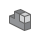

01
Solar Panel Rack Systems
The model shown here is the largest of 22 solar panel rack iterations I modeled. Across the full family, the assemblies span 1–8 panels, Talesun and Meyer Burger panel types, and 6" and 8" mounting gimbals, including heavy duty (HD) versions.
The iterations share a common rack structural design while adapting to different panel counts, dimensions, and mounting requirements.
Drag the model to rotate and inspect the assembly. Additional viewer tools such as the Components menu

for exploring individual parts and subassemblies are available.